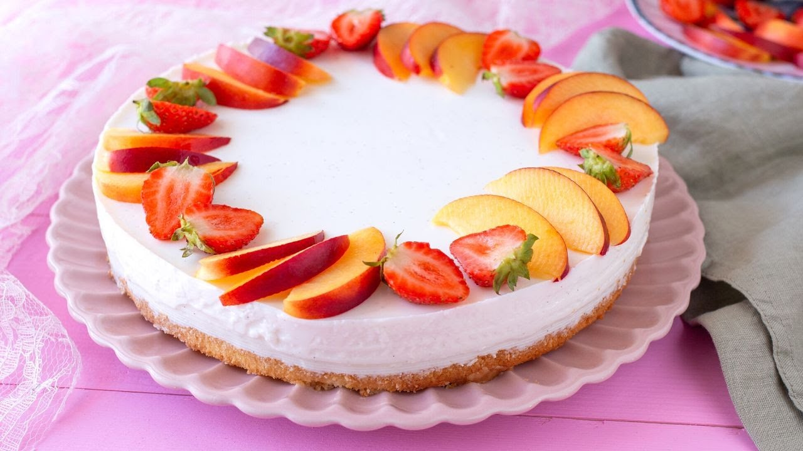

Torta Fredda Panna e Biscotti
Un dessert estivo fresco, cremoso e senza cottura. Una croccante base di biscotti secchi e burro accoglie un soffice ripieno a base di panna montata e latte condensato. Include la variante classica senza gelatina e la versione stabile con colla di pesce.

Ingredienti
Per la Base di Biscotti:
- 250g di Biscotti secchi (tipo Digestives o Secchetti)
- 120g di Burro fuso
Per la Crema di Panna:
- 500ml di Panna fresca liquida da montare (ben fredda)
- 120g di Latte condensato (o 80g di Zucchero a velo)
- 1 cucchiaino di Estratto di vaniglia (o bacca)
Variante CON Colla di Pesce (Opzionale):
- 6g - 8g di Colla di pesce in fogli (circa 3-4 fogli)
- 30ml di Latte o panna calda (per scioglierla)
Per Decorare (A piacere):
- q.b. Cacao amaro in polvere, gocce di cioccolato o frutti di bosco
Procedimento
- Preparazione della base: Trita finemente i biscotti in un mixer. Fai fondere il burro e uniscilo ai biscotti tritati. Mescola bene e versa il composto in uno stampo a cerniera da 20-22 cm rivestito con carta forno. Compattalo sul fondo con il retro di un cucchiaio e metti in frigorifero per 30 minuti (o 15 minuti in freezer).
-
Scelta della variante della crema:
🔹 VARIANTE A (Senza colla di pesce - Più morbida): Monta la panna ben fredda con le fruste elettriche. Quando inizia a prendere consistenza, versa a filo il latte condensato e l'estratto di vaniglia, continuando a montare a neve ferma.
🔹 VARIANTE B (Con colla di pesce - Più compatta): Metti a mollo i fogli di colla di pesce in acqua fredda per 10 minuti. Scalda 30ml di latte/panna (senza bollire), strizza la gelatina e scioglila nel liquido caldo. Monta la panna con latte condensato e vaniglia a neve media, poi incorpora a filo la gelatina intiepidita continuando a montare per amalgamare. - Assemblaggio della torta: Versa la crema di panna sulla base di biscotti ormai fredda e livella bene la superficie con una spatola.
- Riposo e Servizio: Trasferisci la torta in frigorifero per almeno 4 ore (se senza colla di pesce è consigliata 1 ora in freezer prima di servire) per farla rassodare al meglio. Prima di servire, decora con cacao spolverizzato, scaglie di cioccolato, frutta fresca/secca o una glassatura.
💡 Note Finali e Consigli dell'Mastro Pasticcere
- Con o senza colla di pesce? Se cerchi una consistenza tipo "mousse soffice" o un semifreddo veloce da conservare in freezer, usa la versione **senza gelatina**. Se invece devi trasportare la torta o vuoi fette perfette da taglio a temperatura ambiente, usa la variante **con colla di pesce**.
- Trucco per la panna: Assicurati che sia la panna che le fruste da cucina siano freddissime di frigorifero prima di montare.
- Personalizzazione: Puoi aggiungere gocce di cioccolato all'interno della crema prima di versarla sulla base di biscotti!